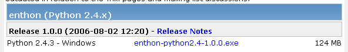
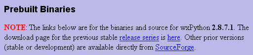
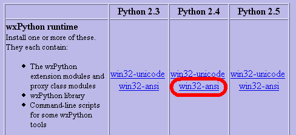
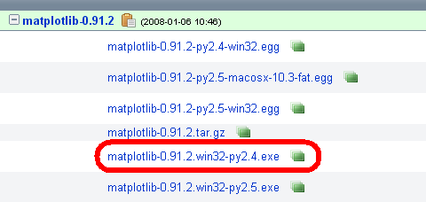

Installation  ( 16 june 2009 )
( 16 june 2009 )
Application Designer / Domain Expert / Control Designer / Core Developer
Tested v0.3
One button installer ( Windows only )
Under Windows, you can either use the "One button Installer" (for a quick evaluation) or use the source code installation ( for the more serious work).
Run the executable, follow the instructions ( you can place the package anywhere you like, and you don't have to install anything else ) and after a minute or so the PyLab_Works_Overview program is launched.
The package contains everything you need: ConfigObj, gprof2dot, HTTPlib, MatPlotLib,Numpy, Pickle, Psyco, pyclbr, PyGame, PyLab_Works, PyODBC, Python, RLCompleret, Scipy, Sendkeys, SQLite3, SQLObject, URLparse, wave, Visual, win32*, wxPython. Although the PyLab_Works programs are available as executables and compiled Python files, all sources are included.
If you really want to continue with PyLab_Works, it's strongly advised to do a Source Code Install, because this one-button-installer is made with py2exe, which needed a lot of hacking to get it working and is not tested thoroughly.
After some people had trouble on Vista, I added all the system files suggested by Py2Exe, see list below.
Source Code Install ( All OS, including Windows )
Install Python, preferable Python 2.5.4.
Install the libraries, preferable the versions specified in the list below.
Unpack the PyLab_Woks zip file anywhere you like, and start one of the following programs:
Libraries for Python 2.6
After installing Python 2.6, Windows still uses Python 2.5 as the default.
This can be changed, by changing the path in the environment variables.
PyScripter uses the latest Python version. To start PyScripter with Python 2.5, use commandline parameter:
PyScripter --python25
Libraries for Source Code Install
Items preceding with an asterisk are only needed when certain components are needed.
Version numbers between brackets are newer version, which seem to work well at first sight.
possibly future libs, not yet decided
test v0.3 on Ubuntu 8
test v0.3 on Fedora 11
Windows system files
OLEAUT32.dll - C:\WINDOWS\system32\OLEAUT32.dll
USER32.dll - C:\WINDOWS\system32\USER32.dll
MFC71.DLL - P:\Python\lib\site-packages\Pythonwin\MFC71.DLL
WINMM.dll - C:\WINDOWS\system32\WINMM.dll
ADVAPI32.dll - C:\WINDOWS\system32\ADVAPI32.dll
msvcrt.dll - C:\WINDOWS\system32\msvcrt.dll
WS2_32.dll - C:\WINDOWS\system32\WS2_32.dll
GDI32.dll - C:\WINDOWS\system32\GDI32.dll
GLU32.dll - C:\WINDOWS\system32\GLU32.dll
NETAPI32.dll - C:\WINDOWS\system32\NETAPI32.dll
MSWSOCK.dll - C:\WINDOWS\system32\MSWSOCK.dll
WSOCK32.dll - C:\WINDOWS\system32\WSOCK32.dll
KERNEL32.dll - C:\WINDOWS\system32\KERNEL32.dll
ODBC32.dll - C:\WINDOWS\system32\ODBC32.dll
MSVCP71.dll - P:\Python\lib\site-packages\wx-2.8-msw-unicode\wx\MSVCP71.dll
VERSION.dll - C:\WINDOWS\system32\VERSION.dll
ole32.dll - C:\WINDOWS\system32\ole32.dll
OPENGL32.dll - C:\WINDOWS\system32\OPENGL32.dll
SHELL32.dll - C:\WINDOWS\system32\SHELL32.dll
RPCRT4.dll - C:\WINDOWS\system32\RPCRT4.dll
comdlg32.dll - C:\WINDOWS\system32\comdlg32.dll
COMCTL32.dll - C:\WINDOWS\system32\COMCTL32.dll
MSVCP71.dll - C:\WINDOWS\system32\MSVCP71.dll
gdiplus.dll - P:\Python\lib\site-packages\wx-2.8-msw-unicode\wx\gdiplus.dll
WINSPOOL.DRV - C:\WINDOWS\system32\WINSPOOL.DRV
ZUT:
wxPython 2.8.8.1
gives weird problems when closing PyLab_Works, don't use it for the moment
The following section is just for my own memory
De-Installation 2.4
This describes how I did the de-installation, realizing that this 2.4 install was a complete mesh !!
Source Installation 2.4
The files below are used, to build the program under winXP. As one of the major problems with Python libraries is, the lack of downwards compatibility of the libraries, it's advised not use other versions.
Python + Scipy
Use the orginal 2.4.3 Enthought Edition, don't use the newer eggs version (they gave me a whole lot of trouble)
http://code.enthought.com/enthon/

*** Python 2.4.3 - Enthought Edition 1.1.0 (#69, Oct 6 2006, 12:53:45) [MSC v.1310 32 bit (Intel)] on win32. ***
wxPython
http://www.wxpython.org/download.php


CustomTreeCtrl Modified
....
MatPlotLib
http://sourceforge.net/projects/matplotlib

Pygame
Original started with version 1.7.1,
now switched to 1.8
http://www.pygame.org/news.html
VPython = Visual / Soya3D ==> PySoy / OGL
Not decided yet what to choose. Probably in the beginning we don't use a 3D-engine, but just a 2D-engine based on modified OGL-like.
Changes in Python Libraries